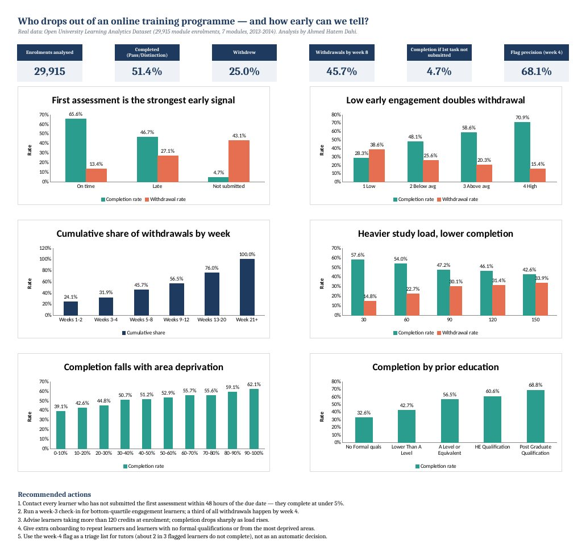

Learner dropout early warning
29,915enrolments analysed (of 32,593)
~10Mclick records
68%precision of week-4 flag

Question
A training provider loses about one learner in four. Who drops out, when, and can tutors spot them early enough to act?
What I did
- Joined the learner, registration, assessment and click-log tables (about 10 million rows) in Python.
- Cleaned the data: fixed 3,516 inconsistent labels and excluded 2,678 learners who left before day 0, all recorded in a cleaning log.
- Built week 1–4 engagement measures and first-assessment status, then compared outcomes by engagement, assessment behaviour, study load and background.
- Tested a simple rule a tutor can apply in week 4.
Findings
- 51% complete, 25% withdraw, 24% fail.
- 32% of withdrawals happen by week 4 and 46% by week 8.
- Learners who do not submit the first assessment complete 4.7% of the time, against 65.6% for on-time submitters.
- The least active quarter in weeks 1–4 withdraws at 39%, against 15% for the most active.
- The week-4 flag (bottom-quartile activity or first assessment missing) catches 25% of learners, and 68% of them do not complete: 1.5 times the baseline.
What to do
- Contact anyone who misses the first assessment within 48 hours.
- Run a week-3 check-in for learners in the low-activity group.
- Give workload advice at enrolment to people taking several modules.
- Target onboarding at the backgrounds with the lowest completion.
Tools
Python (pandas) for joining and cleaning, Excel with COUNTIFS models and charts for the analysis and dashboard.